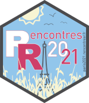

Articles
Thomas Vroylandt
About
Articles
Categories
All
(37)
Compte-rendu
(2)
Data cleaning
(1)
Excel
(1)
FR
(34)
Quarto
(2)
RMarkdown
(3)
Reports
(5)
Scout
(1)
Social policy
(23)
Sociology
(5)
Talks
(4)
Templates
(2)
Unemployment policy
(4)
Articles
UseR 2024 - Parametrized Nice Reports with Quarto and PDF
Talks
Reports
Quarto
Conference talk about how to create nice PDF reports with Quarto
Jul 9, 2024
quarto.report
Reports
Quarto
Templates
quarto.report
is a Quarto extension to help you create reports in Quarto without the burden of handling the stylesheet
Jul 9, 2024
Panorama statistique
FR
Social policy
Le Panorama statistique de la Drees offre une vision complète des politiques sociales à l’échelle locale
Jul 1, 2024
Rencontres R 2024 - Cleaning data from Excel
FR
Talks
Excel
Data cleaning
This talk presents some useful ways to clean data from Excel that are oddly formatted, mainly using
tidyxl
and
unpivotr
Jun 10, 2024
Unédic - Sous-emploi
FR
Unemployment policy
Comprendre le sous-emploi
May 30, 2024
ISD
FR
Social policy
Les Indicateurs Sociaux Départementaux (ISD) servent au suivi locale des politiques sociales
May 28, 2024
Unédic - Chômage et minima sociaux
FR
Unemployment policy
Social policy
Comment s’articulent chômage, prime d’activité et RSA ?
Feb 29, 2024
Unédic - Réglementation 2023
FR
Unemployment policy
Suivi et effets de la réglementation d’assurance chômage
Feb 23, 2024
Unédic - Réglementation 2021
FR
Unemployment policy
Suivi de la règlementation 2021 d’assurance chômage
Feb 24, 2023

Rencontres R 2021 -
pagedown
FR
Talks
Reports
RMarkdown
Conference talk about creating a custom template with
pagedown
Jul 13, 2021
Rencontres R 2021 -
gouvdown
FR
Talks
Reports
RMarkdown
Conference talk about
gouvdown
, R package that implement the official French design guide
Jul 13, 2021
Eclairages et Synthèse - 67
FR
Social policy
Enquête BMO 2021
May 4, 2021
pagedreport
Reports
RMarkdown
Templates
pagedreport
is an R package to help you make beautiful PDF-based reports from RMarkdown
May 1, 2021
Statistiques et indicateurs - 21.013
FR
Social policy
Tableau de la filière maritimie et fluviale en France
Mar 29, 2021
Statistiques et indicateurs - 21.001
FR
Social policy
100 000 offres en alternance déposées par an à Pôle emploi
Jan 11, 2021
Eclairages et Synthèses 61
FR
Social policy
Projets de recrutement des employeurs : impact de la crise sanitaire - Enquête BMO Flash
Nov 6, 2020
Dares Résultats - 32
FR
Social policy
Les tensions sur le marché du travail en 2019
Oct 8, 2020
Eclairages et Synthèses 58
FR
Social policy
Quelles compétences pour quels territoires ?
May 29, 2020
Eclairages et Synthèse - 57
FR
Social policy
Enquête BMO 2020
May 15, 2020
Eclairages et Synthèses - 55
FR
Social policy
Les offres déposées à Pôle emploi depuis 20 ans, reflet des évolutions du marché du travail
Jan 9, 2020
Techniques quantitatives pour les sciences sociales
FR
Social policy
Slides du cours de L2 Sciences Sociales à l’ICP
Sep 1, 2019
Eclairages et Synthèse - 52
FR
Social policy
Enquête BMO 2019
Apr 1, 2019
Statistiques et indicateurs - 19.014
FR
Social policy
L’emploi intérimaire en janvier 2019
Mar 1, 2019
VPPEC Sport
FR
Social policy
Vision prospective partagée des emplois et des compétences - Les métiers du sport
Feb 1, 2019
Statistiques et indicateurs - offres d’emploi
FR
Social policy
Les offres d’emploi diffusées par Pôle emploi
Mar 21, 2018
Etudes et Résultats - 1044
FR
Social policy
7 800 étudiants en formation d’assistant de service social en 2016
Dec 14, 2017
Cairn - Participations
FR
Scout
Sociology
D’une rive à l’autre du scoutisme : des aventures buissonnières à l’apprentissage de la citoyenneté
Sep 1, 2017
Etudes et Résultats - 1020
FR
Social policy
Les assistant.e.s maternel.le.s ont gagné en moyenne 1 108 euros en juin 2014
Aug 29, 2017
Nonfiction
FR
Compte-rendu
Sociology
Nonfiction est un site de compte-rendu d’ouvrages scientifiques
May 12, 2017
Etudes et Résultats - 986
FR
Social policy
Une baisse de 7 % des étudiants inscrits en formations sociales entre 2010 et 2015
Dec 9, 2016
Etudes et Résultats - 978
FR
Social policy
Les assistantes maternelles gardent 8 % d’enfants de plus en 2014 qu’en 2010
Oct 14, 2016
Ethnographie, numérique et statistiques : les Veilleurs de la ‘Manif pour tous’, Journée d’études - De la constitution d’un corpus aux analyses statistiques
FR
Sociology
Journée d’études dans le cadre de la recherche menée sous la direction de Marie Balas (Unistra)
Oct 10, 2016
Trainings
FR
Social policy
Formations R données à Pôle emploi
Sep 22, 2016
Dossiers de la Drees - 05
FR
Social policy
Des conditions de travail en EHPAD vécues comme difficiles par des personnels très engagés
Sep 22, 2016
Etudes et Résultats - 953
FR
Social policy
Formations en travail social : 62 000 étudiants en 2014
Feb 29, 2016
Cairn - Savoir/Agir
FR
Sociology
Politique de la ville. Que nous révèle la qualit� de vie ?
Sep 1, 2015
Lectures
FR
Compte-rendu
Sociology
Lectures est un site de compte-rendu d’ouvrages scientifiques
Jan 1, 2015
No matching items